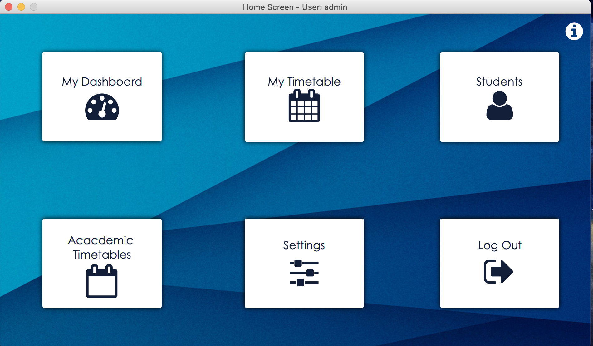

In the case that the SQLite database is lost or corrupted, use this window to generate a new one with all the necessesary structures (including a starter administrator account)
In the case that the SQLite database is lost or corrupted, use this window to generate a new one with all the necessesary structures (including a starter administrator account)
Enter your login credentials here, or click the Signup button to signup.
Click the Power Off
button to close the application, or the Database button to generate a new database.
Enter your new login details here to signup.
In the case that the SQLite database is lost or corrupted, use this window to generate a new one with all the necessesary structures (including a starter administrator account)

This is the main screen of the Timetabler, where you can access all of the main functions of the app.
Click an icon to open it's respective app.
View relevant statistics in the Overview tab, including your total number of students, how many lessons you have scheduled for that week, and the total lesson time of that week.
Use the Notes tab to view and edit notes on all of your students by selecting a student in the drop-down menu.
The administrator can view and edit notes of all students on the system.
The Register tab is used to keep a current register of all students on the system, according to the 6 week timetable cycle.
Users can only modify records of their own students, the administrator has access to all students.
Timetables calculated by the application are saved here, and can be recalculated by clicking the Calculate button.
Select your username from the Teacher drop-down menu, and a week from the 6 week cycle from the Week menu.
Timetables can also be exported for each of yor students by selecting their name in the My Students menu.
The Administrator can view all timetables saved on the system.
View the details of all students saved on the Timetabler system.
Ordinary users can only modify or delete their own students, while the administrator has full access to all students.
Fill in the text fields to add new student data, and the arrow icon to clear them.
Click on a column header to sort by that field.
View the imported academic timetables in this window, which can be imported through the settings window.
Use the Dark Mode toggle to switch theme styles in real time.
The administrator can drag and drop academic timetable .xlsx files into their respective boxes to import them and click the red X button to delete them, as well as modity their titles by right clicking the label of the box.
Boxes representing successful imports become green, while missing imports are grey.
Hover the cursor over a box to see it's original filepath.
 Perform account-related tasks in this page, including viewing and changing your login credentials and deleting your account.
Perform account-related tasks in this page, including viewing and changing your login credentials and deleting your account.
The administrator can also change settings relating to the Students Auto-Update feature, which automatically updates the grades of all students at the beginning of each year and removes students that have finished school.
The administrator can perform advanced SQLite queries in this SQL editor.
 Academic timetables are imported as Excel spreadsheets using the above format. The row number refers to the period number, and each column represents an entire weekday, from Monday to Friday.
Academic timetables are imported as Excel spreadsheets using the above format. The row number refers to the period number, and each column represents an entire weekday, from Monday to Friday.